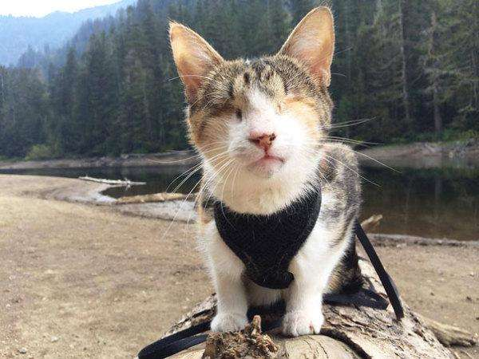
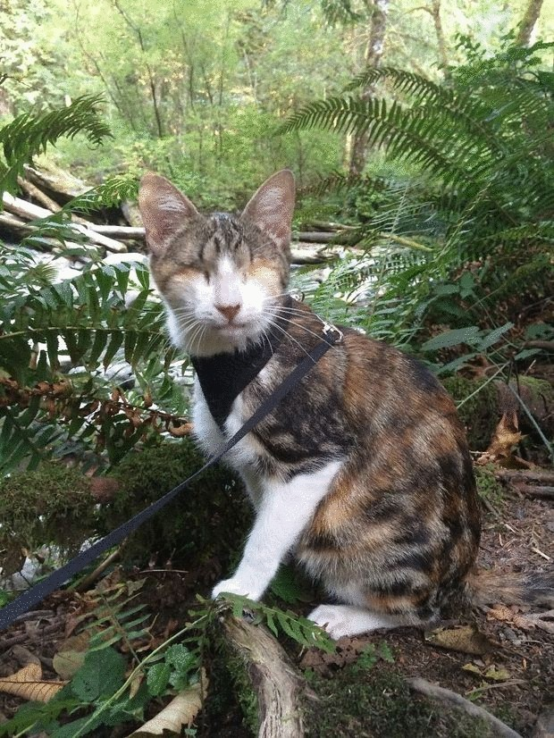
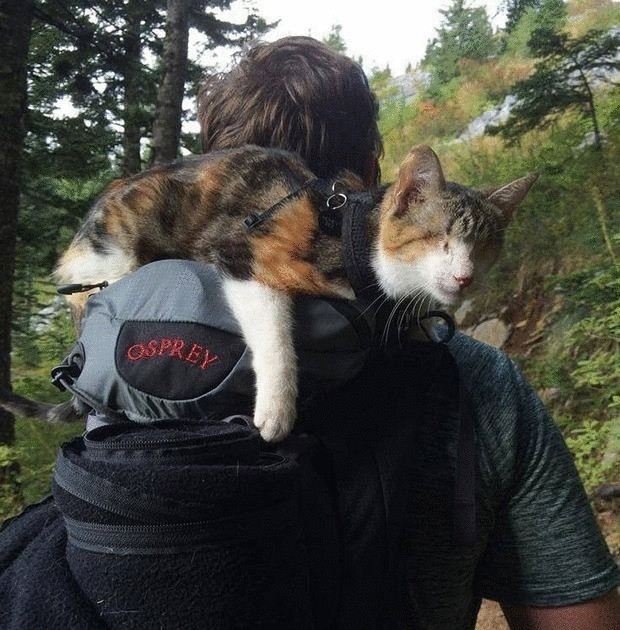
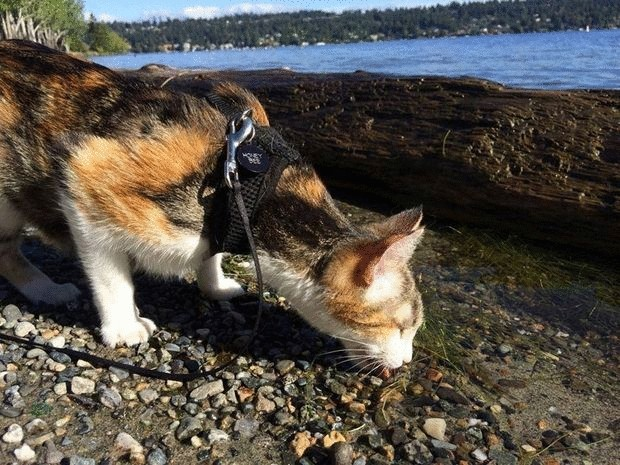

Фотоотчет о походе со слепой кошкой по кличке Honey Bee («Медовая пчелка») выложила семья из Сиэтла. Всех тронул рассказ о полноценной жизни слепой от рождения кошки ,с которой ходить в походы ,как уверяют ее хозяева, даже лучше, чем с собакой.
Удивительная и трогательная история слепой кошки Honey Bee (Медовая пчелка) произошла в США, в районе Сиэтла. Волонтер Сабрина в течении трех дней, проведенных в приюте для бездомных животных в Фиджи, познакомилась со слепой кошкой. Вернее, это кошка первая подошла и начала ласкаться к Сабрине. Несмотря на ее изъян молодая кошечка была веселой и игривой. Так она приобрела свою новую семью и новое имя «Медовая пчелка».
Глядя на кошечку со стороны и не скажешь, что кошка абсолютно слепа. Она каким-то «третьим» глазом хорошо видит и ориентируется на местности, смело идет вперед. Ее новая семья очень любит путешествовать, и в основном это пешие прогулки и походы в горы. И в этих пеших походах их всегда сопровождает пушистая любимица. Кошка сидит на плечах или рюкзаке хозяина, а на более безопасных дорогах и тропинках кошка передвигается сама пристегнутая на поводок как собачка. И глядя на фото расположенные ниже еще неизвестно кто кому указывает путь, хозяин кошке или наоборот, кошка ведет хозяина. Только когда кошка передвигается сама на поводке, как признается хозяин, времени на дорогу уходит больше. Так как кошку отвлекают посторонние запахи и звуки. Но она быстро адаптируется и даже находясь на самом краю обрыва или на скалистом берегу у реки, она чувствует опасность и передвигается более осторожно. И еще ни разу не было случая, чтобы она упала или ошиблась в правильном выборе безопасного пути. Ей подвластны любые горы и любые тропы.
Вот так любовь и забота одной семьи дали слепой кошке-инвалиду вторую полноценную жизнь. И кто знает, как бы повернулась судьба к этому одинокому зверьку в приюте, если бы на ее пути не встретилось доброе сердце Сабрины.
  